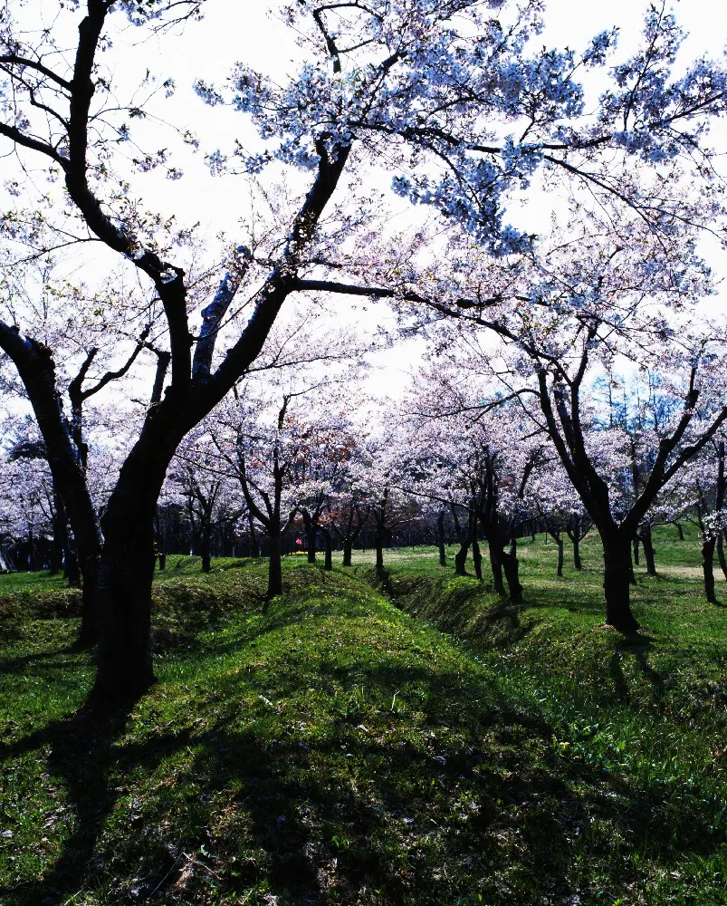
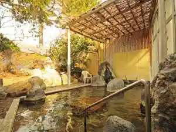
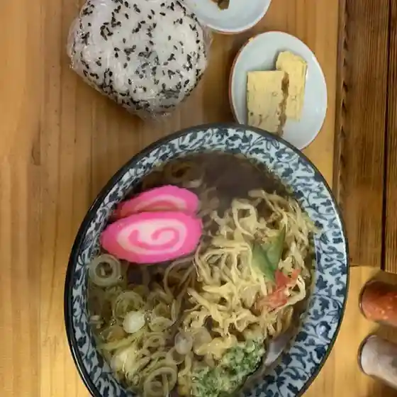
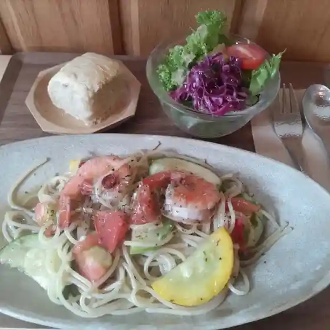
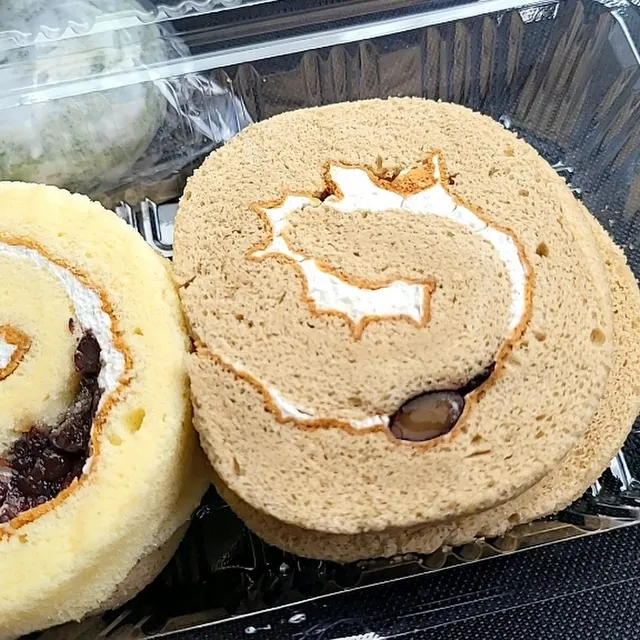
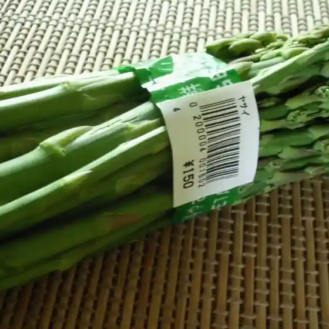
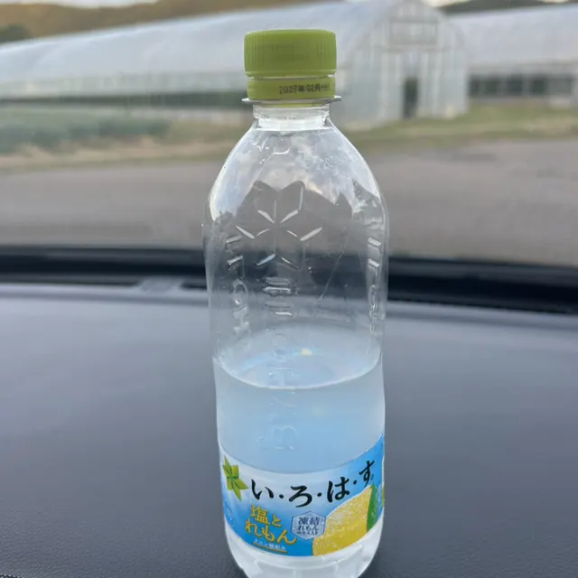
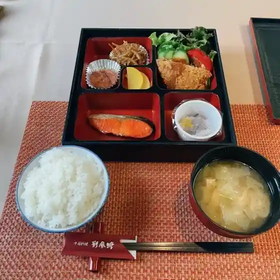
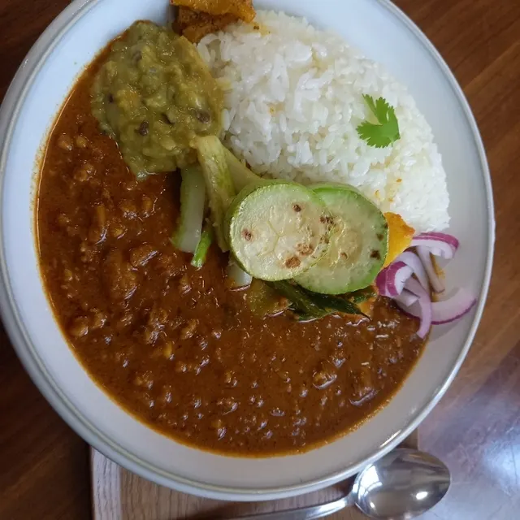

Assabu
Assabu · Hokkaido
Assabu
Highlighted on the Hokkaido map.

Stay
俄虫温泉旅館

Ga Mushi Onsenryokan
厚沢部うずら温泉 四季の宿
Assabu Uzura Onsen Shiki No Yado
Dining
ふく福

Fuku Fuku
tabele

Tabele
厚沢部菓子工房 クラヤ

Assabu Kashi Koubou Kuraya
新函館サービスセンター

Shin Hakodate Saabisusentaa
俄虫温泉旅館

Ga Mushi Onsenryokan
中国料理 彩風塘 本店

Chuugokuryouri Sai Kaze Tou Honten
スパイスカレー koli

Supaisukaree Koli
居酒屋 花のれん

Izakaya Hana Noren
あすなろパンカフェテリア
Asunaro Pankafeteria
居酒屋桜鳥
Izakaya Sakura Tori
悦
Etsu
たいこ山
Taiko Yama
百姓屋
Hyakushou Ya
味処 停車場
Ajidokoro Teisha Ba
前井食堂
Mae I Shokudou
森藤旅館
Moritou Ryokan
渋田産業
Shibuta Sangyou
カンペシーノ
Kanpeshiino
札幌酒精工業株式会社 厚沢部工場
Sapporo Shusei Kougyou Kabushikigaisha Assabu Koujou
セイコーマート おの厚沢部
Seikoomaato Ono Assabu
森とゆできびガーデン上の山
Mori Toyudekibi Gaaden Ueno Yama
セブンイレブン 厚沢部町店
Sefu N'Irefu N Assabu Machi Mise
ラッキーピエロ 江差入口前店
Rakkiipiero Esashi Iriguchi Mae Mise
おむすびと田舎料理 むすび
Omusubito Inaka Ryouri Musubi